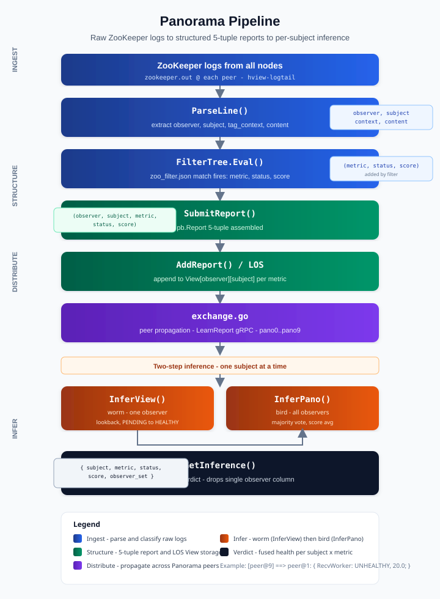

Unified RCA — Tier 1 (Symptom Detection)
Panorama’s core trick is not to compare against a historical baseline. It collects each node’s local observation of its neighbors, normalizes them into structured views, and reconciles disagreements via weighted majority. The signal is convergence of independent observers, not deviation from normal.
| Document | Panorama learning dissection |
| Tier | 1 — Symptom detection (observer consensus) |
| Code | panorama/ ·
filter.go · decision/majority.go |
| Simulator | 127.0.0.1:8770/#panorama |
| Print (A4) | pandoc Panorama_dissection.md -o Panorama.pdf --css=assets/dissection-print.css -V papersize=a4 |
Work through sections in order the first time.
core distinction → pipeline overview → worm/bird inference → normalization → filter tree → report tuple → local views → LOS storage → two-step inference → majority reconciliation → Nezha vs Panorama
For reference, jump to the Cheat Sheet.

Figure 1 — Panorama pipeline. Each row in
Observation Details is the same
5-tuple
(observer, subject, metric, status, score).
GetInference() returns a per-subject verdict with
observer_set instead of a single observer.
| Phase | Step | Output |
|---|---|---|
| Ingest | ParseLine() |
observer,
subject, tag_context,
content |
| Ingest | FilterTree.Eval() |
metric, status,
score (from match) |
| Structure | SubmitReport() →
AddReport() / LOS |
Report stored in
View[observer][subject] |
| Distribute | exchange.go |
Reports propagated to pano0…pano9 |
| Infer | InferView() →
InferPano() |
Worm then bird — one subject at a time |
| Verdict | GetInference() |
{ subject, metric, status, score, observer_set } |
Nezha compares fault-window patterns against a fault-free baseline
(construct_data). The signal is deviation: pairs that
appear in rca_data but not in construct_data.
This works well but has two constraints:
Panorama asks: do independent observers agree right now? If 4 out of 5 ZooKeeper followers independently log “leader unreachable” within the same time window — no historical baseline needed — that convergence is the signal.
The family member metaphor: Rather than looking up a patient’s medical records (centralized logs/traces/metrics as in Nezha), Panorama asks the closest family members — the nodes in direct contact with the affected node — to report what they observed. Each node’s logs are a local observation of its neighbors’ health, not just a record of its own internal behavior.
This makes Panorama:
Our initial mental model used a 3-field triplet:
(observer, subject, state). The real report produced by
Panorama is a 5-tuple:
(observer, subject, metric/context, status, score)Metric / Context — scopes the status to a specific
component dimension. Extracted as tag_context during
ParseLine(). Examples: SyncThread,
LearnerHandler, WorkerSender,
cpu. A single subject can carry multiple metrics with
independent statuses simultaneously:
subject=peer@9:
SyncThread → UNHEALTHY, score=20
LearnerHandler → DEAD, score=0These are separate reports, not overwrites. Metric is the key that namespaces health state per component.
Score — numeric severity/confidence (0–100).
Averages across observers in InferPano when status alone
doesn’t discriminate. A low score on UNHEALTHY is weaker
signal than a high score on UNHEALTHY.
| Status | Meaning |
|---|---|
HEALTHY |
Explicitly observed as fine |
UNHEALTHY |
Degraded but not down |
MAYBE_UNHEALTHY |
Weak signal, low confidence |
DEAD |
Confirmed down |
PENDING |
Transient — absorbed by later HEALTHY in
InferView lookback |
PENDING is a first-class state that gets resolved rather
than surfaced. If a PENDING(50) is followed by a
HEALTHY(90) in the lookback window, InferView
resolves it to HEALTHY(90) — the pending concern was
short-lived.
A Match is the filter tree rule that fires on a log
line. One match produces one (context, status, score)
triple. No match = line silently dropped, never enters LOS. Match is the
gate between raw text and structured report.
LOS = Local Observation Store
(store/raw.go → AddReport()).
After SubmitReport() assembles the 5-tuple, it lands in
LOS — the persistence layer between filter output and inference. LOS
organizes reports into:
InferView() reads.InferPano() reads.LOS write side: Report → AddReport() → View (per observer+subject+metric)
LOS read side: InferView() reads View → InferPano() reads Panorama modelThe Panorama data model (lowercase) is distinct from the Panorama system (uppercase). The model is just the aggregated collection of views for a subject — the input to the majority vote.
The majority vote in InferPano does not
operate on raw reports. It operates on already-smoothed
per-observer summaries produced by InferView. This
two-step design separates noise reduction from consensus.
decision/majority.go)Per observer, per subject, per metric:
VIEW_METRIC_HISTORY_SIZE = 2)PENDING → HEALTHY transitions (if newer
HEALTHY exists in window)Output: one smoothed (status, score) summary per
observer per metric.
decision/majority.go)Across all observers for one subject, per metric:
Output: final
(subject, metric, status, score, observer_set) verdict.
Yes — worm view vs bird view is the right mental model, with one important nuance: both steps are scoped to one subject at a time. Panorama does not fuse all entities in the cluster in one shot; it builds one panorama per subject, then infers that subject’s health.
| InferView (worm) | InferPano (bird) | |
|---|---|---|
| Metaphor | One observer’s timeline along one subject | All observers fused for that subject |
| Input | One View = one observer’s stream about one subject |
One Panorama = all views about that subject |
| Question | “What does FE_2 think about TS_3’s
cpu?” |
“What do all observers think about
TS_3’s cpu?” |
| Granularity | per observer × subject × metric | per subject × metric (across observers) |
| Code | decision/majority.go → InferView() |
decision/majority.go → InferPano() |
Subject = TS_3 (who we are judging)
FE_1's worm (InferView) ──┐
FE_2's worm (InferView) ──┼──► Bird view (InferPano) for TS_3
FE_4's worm (InferView) ──┘Every Panorama report is built from three identifiers plus status/score:
(observer, subject, metric, status, score)| Field | Meaning | Question it answers |
|---|---|---|
| Subject | Entity being judged | “Whose health?” |
| Observer | Node that reported | “Who saw it?” |
| Metric | Health dimension / failure aspect | “Unhealthy in what way?” |
A report is always observer → subject: “I think they are …” on metric X.
| Subject | In the system |
|---|---|
peer@9 |
ZooKeeper peer 9 (ensemble member) |
peer@1 |
ZooKeeper peer 1 (often a remote peer) |
TS_3 |
Backend service (train-ticket style tests) |
FE_2 |
Frontend monitor node (in unit tests) |
In worker_sender: observer is
peer@2, but subject is peer@1
— peer@2 reports that peer@1 looks unhealthy (channel open failure).
| Observer | Role |
|---|---|
peer@9 |
This ZK node’s hview instance (tails local
zookeeper.out) |
peer@2 |
Another peer’s hview |
FE_1, FE_2, FE_4 |
Frontend monitors in store/inference_test.go →
TestInfer |
The same subject can have many observers; each
contributes one View in that subject’s panorama.
Metric comes from filter Context in
conf/zoo_filter.json, or from manual
metric:status:score in hview-client.
| Metric | Typical trigger |
|---|---|
SyncThread |
Log: Too busy to snap, skipping |
RecvWorker |
tag_context == RecvWorker |
SendWorker |
tag_context == SendWorker |
LearnerHandler |
Shutdown / GOODBYE / exception logs |
WorkerSender |
Cannot open channel to … |
cpu, mem, network |
Manual or synthetic reports (TestInfer) |
remote_dispatch |
TestInferPending — pending→healthy resolution |
One subject can carry multiple metrics at once — each is a separate report, not an overwrite:
subject = peer@9:
SyncThread → UNHEALTHY, 20
LearnerHandler → DEAD, 0pending_resolve)TS_3FE_2remote_dispatchFE_2’s view timeline:
t1: remote_dispatch = PENDING, 50
t2: remote_dispatch = HEALTHY, 90InferView walks backward (max 2 per metric), merges
PENDING into later HEALTHY:
InferView(FE_2 → TS_3): remote_dispatch = HEALTHY, 90That is one worm — only FE_2’s smoothed opinion about TS_3. No other observers involved yet.
majority_cpu)TS_3cpuAfter each observer’s stream is smoothed by
InferView:
| Observer | InferView summary for cpu |
|---|---|
| FE_1 | UNHEALTHY, 60 |
| FE_2 | HEALTHY, 70 |
| FE_4 | (mixed raw stream → per-view summary) |
InferPano on panorama for subject
TS_3:
cpuInferPano(TS_3): cpu = UNHEALTHY, score ≈ 40That is the bird view — collective verdict for one subject on one metric.
quorum_cascade)peer@9 emits several reports in one fault window. Each
subject gets its own panorama:
| Report | observer | subject | metric |
|---|---|---|---|
| 1 | peer@9 | peer@1 | RecvWorker |
| 2 | peer@9 | peer@4 | RecvWorker |
| 3 | peer@9 | peer@3 | SendWorker |
| 4 | peer@9 | peer@9 | SyncThread |
For subject = peer@9 (simulator focus):
peer@9InferView(peer@9 → peer@9): SyncThread UNHEALTHY,
20InferPano(peer@9): SyncThread UNHEALTHY, 20For subject = peer@1 (different panorama):
InferView(peer@9 → peer@1): RecvWorker UNHEALTHY,
20InferPano(peer@1): RecvWorker UNHEALTHY, 20Same observer, different subjects and metrics — one inference run per subject.
| Term | One line |
|---|---|
| Subject | Who we are diagnosing |
| Observer | Who reported the observation |
| Metric | Which component/signal (SyncThread, cpu, …) |
| InferView | Fuse one observer’s timeline for one subject |
| InferPano | Fuse all observers’ summaries for one subject |
Two followers observing the same leader failure might log:
follower-1: "WARN QuorumCnxManager - Connection timeout to /10.0.0.1:2888"
follower-2: "ERROR LeaderHandler - Lost connection to leader epoch 47"Same underlying fact — leader unreachable — expressed in completely different strings. You cannot majority-vote on raw strings. Before comparison is possible, both lines must produce the same structured output:
(observer=follower-1, subject=leader, state=DEAD)
(observer=follower-2, subject=leader, state=DEAD)This transformation is the filter tree’s job.
zoo_filter.json + filter.go)A flat rule can match a string. It cannot match a string in context. Consider:
"Connection lost to /10.0.0.1:2888"Before classifying this as state=DEAD, you need to know:
is /10.0.0.1 the leader or a peer
follower? The same connection loss means something completely
different depending on the subject’s role in the quorum.
A tree provides topology awareness:
parent node → "who is this log line about, and what role do they play?"
child node → "given that role, what state does this observation imply?"The parent establishes role/context; the child fires
conditional on that context. A flat list treats all connection
losses identically. A tree discriminates: leader-loss →
DEAD escalation; peer-loss → UNCERTAIN or
lower severity.
Analogy to Nezha pairs: Just as Nezha uses directed pairs (A → B) rather than single events to encode cause-and-effect, Panorama uses tree-structured rules rather than flat patterns to encode topology-and-state. Both designs are solving the same underlying problem: single-unit matching loses the relationship that gives the signal meaning.
Every matched log line produces one structured tuple:
(observer, subject, state)Where state is one of: ALIVE,
DEAD, UNCERTAIN (or system-specific
variants).
After the filter tree processes all log lines for a time window, you
have a collection of (observer, subject, state) tuples.
Grouped by observer, these form local views:
observer → { subject → state }follower-1's local view: { leader → DEAD, follower-2 → ALIVE, follower-3 → ALIVE }
follower-2's local view: { leader → DEAD, follower-1 → ALIVE, follower-3 → UNCERTAIN }
follower-3's local view: { leader → ALIVE, follower-1 → ALIVE, follower-2 → ALIVE }Each row is one node’s filter-tree output — what that node’s logs say about every peer it interacts with. These are now structurally comparable: same fields, same state vocabulary, across all observers.
UNCERTAIN is not a fallback or an error. It means: “I
observed something about this subject, but my signal is ambiguous.” It
is useful information for operators — it points where to look next
rather than forcing a wrong binary verdict. A subject with many
UNCERTAIN votes across observers is itself a signal worth
investigating.
decision/majority.go)With local views in hand, majority reconciliation combines them into a single panorama verdict per subject.
Naive majority: count votes, pick the winner.
leader: DEAD × 2, ALIVE × 1 → verdict: DEADBut naive majority breaks when some observers are themselves
compromised. If follower-3’s ALIVE vote for the leader
comes from a node that is itself partially isolated, counting it equally
with confident DEAD votes produces a wrong or uncertain
verdict.
Panorama solves this using the same local view infrastructure to assess observer credibility. It checks: what do other observers say about this observer?
follower-3 votes: leader → ALIVE
Check other observers' views of follower-3:
follower-1's view of follower-3: ALIVE
follower-2's view of follower-3: UNCERTAIN
→ follower-3 is partially suspect → its vote is down-weightedThe recursion is elegant: no separate credit-scoring system, no historical accuracy table. Observer credibility is derived live from the same filter tree + local view pipeline. The mechanism is self-referential — local views assess both subjects and observers.
subject → weighted majority verdict
leader → DEAD (2 × confident DEAD vs 1 × down-weighted ALIVE)
follower-3 → UNCERTAIN (one observer flagged it; warrants further inspection)A panoramic photo is assembled from many overlapping narrow-angle images. Each partial image is valid within its frame; combining them — with awareness of overlap and occlusion — produces one wide composite picture.
Panorama the system works identically:
many narrow local views → one wide composite inference
(per-observer) (system-wide verdict)Each node sees only its immediate neighbors clearly. Panorama stitches these partial pictures into a system-wide health assessment, handling disagreements (occlusion) through weighted majority.
| Dimension | Nezha | Panorama |
|---|---|---|
| Signal | Pair support drift (normal vs fault baseline) | Convergence of independent observer votes |
| Requires baseline? | Yes — construct_data fault-free window |
No — inference is real-time |
| Catches first-time faults? | Only after baseline is established | Yes, immediately |
| Works on singleton services? | Yes — traces/logs exist regardless | No — needs multiple observers of same subject |
| Scales with more servers | Cost grows (more CSVs to scan) | Confidence grows (more observers per subject) |
| Core data structure | Directed event pair (cluster_id → cluster_id) | Local view tuple (observer, subject, state) |
| Normalization | Drain3 cluster_id (all telemetry → int) | Filter tree (log line → structured state tuple) |
| Combining signal | Pattern support count across traces | Weighted majority across observer local views |
| Observer credibility | Not applicable (centralized) | Assessed recursively via same local view pipeline |
| File | Role |
|---|---|
panorama/conf/zoo_filter.json |
Filter tree definition — maps log patterns to (observer, subject, state) |
panorama/types/filter.go |
Filter tree execution logic |
panorama/decision/majority.go |
Weighted majority reconciliation |
panorama/plugin/zookeeper.go |
ZooKeeper-specific log parsing and node role identification |
raw log line
→ filter tree (topology-aware: who is this about, what role do they play?)
→ local view tuple: (observer, subject, state)
→ group by observer: { observer → { subject → state } }
→ weighted majority (weights derived from recursive observer health check)
→ panorama verdict: { subject → ALIVE | DEAD | UNCERTAIN }| Concept | Meaning |
|---|---|
| Observer | Node whose logs are being read |
| Subject / Target | Node being assessed (potentially faulty) |
| Metric / Context | Component dimension scoping the status (e.g. SyncThread, cpu) —
tag_context from ParseLine |
| Status | Health state: HEALTHY / UNHEALTHY / MAYBE_UNHEALTHY / DEAD / PENDING |
| Score | Numeric severity 0–100; averaged across observers in InferPano |
| Match | Filter tree rule that fires — gate between raw log and structured report |
| Report | Full 5-tuple: (observer, subject, metric, status, score) |
| LOS storage | Local Observation Store — persistence layer between filter output and inference |
| View | All reports from one observer about one subject, per metric |
| Panorama (data model) | All views for one subject across all observers — input to InferPano |
| InferView | Per-observer smoothing (worm): lookback, score averaging, PENDING resolution — one observer × subject × metric |
| InferPano | Cross-observer majority (bird): tie-break + score averaging → final verdict — all observers × subject × metric |
| PENDING | Transient state absorbed by later HEALTHY in InferView lookback window |
| Recursive assessment | Observer credibility derived from other observers’ local views of that observer |
Nezha: pair_score = support_in_rca_data - support_in_construct_data
Panorama: verdict = weighted_majority({ observer → state for subject X })
weight(observer) ∝ how many other observers see it as ALIVEhttp://localhost:8771/panorama-learning-prototype.html —
walk scenarios in this order: Quorum cascade → SyncThread issue →
LearnerHandler DEAD → WorkerSender issue → Pending resolution →
Multi-observer majority. For each, identify: which observer voted first,
what state it produced, and whether the final verdict matches your
prediction.filter.go or
majority.go. One-line mapping: “UI stage X = function Y in
file Z.”filter.go resolve the conflict — first
match, highest-severity match, or something else?